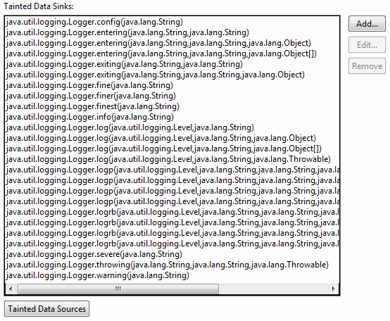

Audit - Rules - LoggingDescriptionThis group contains audit rules that check for correct usage of various logging frameworks. |
|
Subcategories:
|
| Rules: |
Summary
User input might be getting used to write directly to a log.
Description
Log Forging occurs when user input is printed directly to a log or as part of a log.
To detect violations, this audit rule searches the code for logging statements such as logger.log(..) and traces where the logging string could have come from. In cases where the source of the path is user input, such as data from a servlet request, javax.servlet.ServletRequest.getParameter(java.lang.String), or from a SWT Text widget, org.eclipse.swt.widgets.Text.getText(), a violation is created.
These two sets of methods, the locations where tainted user data can come from and the methods used to create paths, are editable by the user. If methods are missing that are in a common package (such as java.lang.*), please let CodePro support know.
Security Implications
When a malicious user can enter information directly into the log, the application logging utility can become compromised.
Example
The invocation of log(..) would be flagged as a violation since it uses the user name information passed from a servlet request:
ServletRequest servletRequest = ...;
Logger logger = ...;
Level level = ...;
String userName = servletRequest.getParameter("userName");
String logMessage = "User input the following user name: " + userName;
logger.log(level,logMessage);
